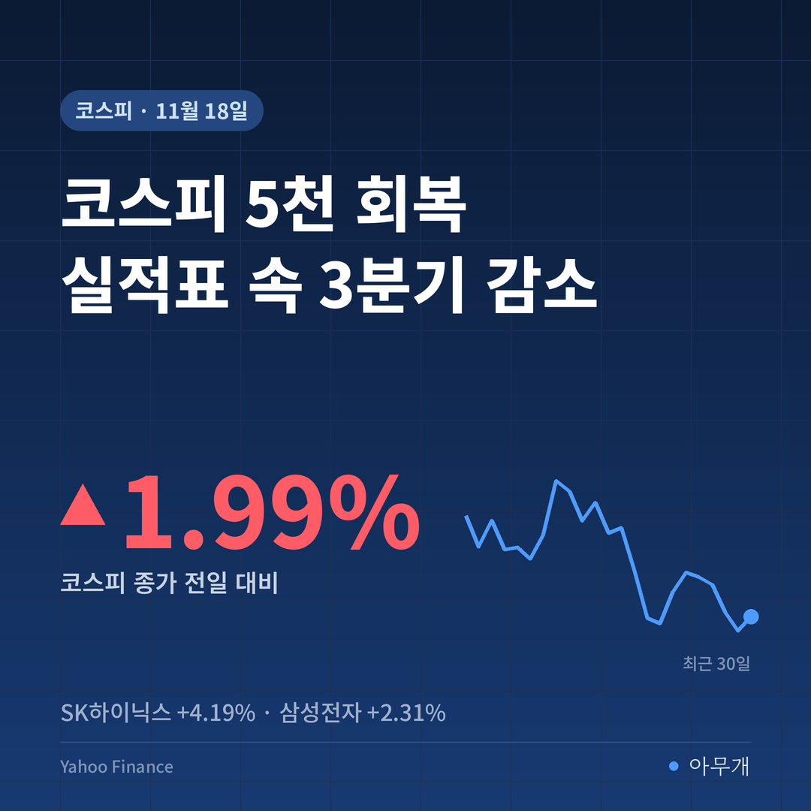
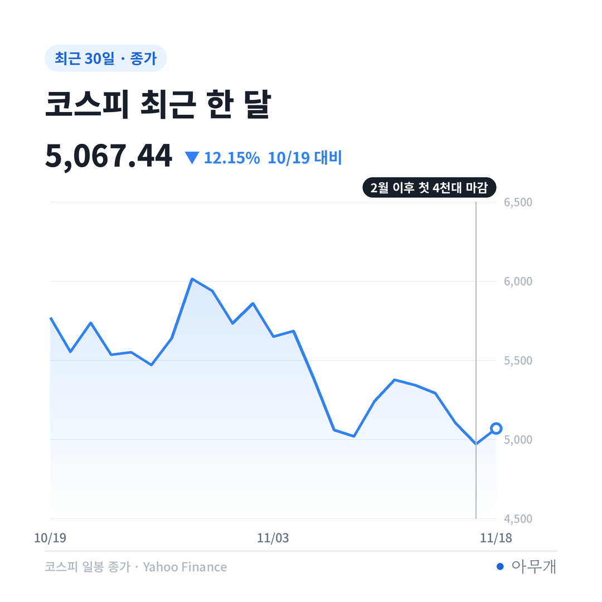
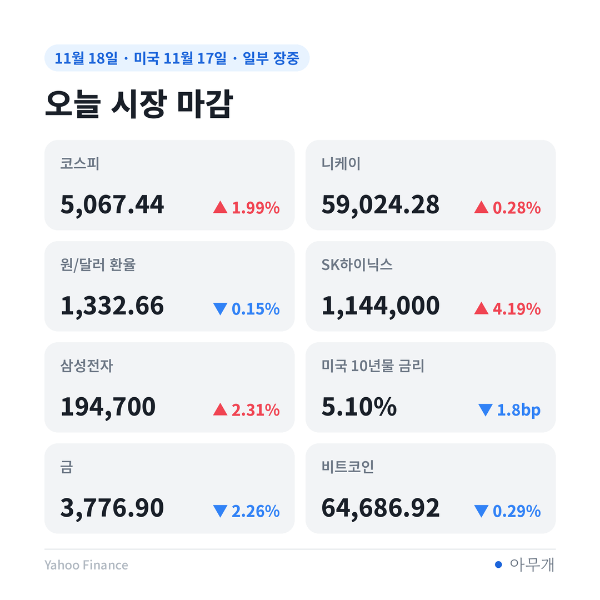
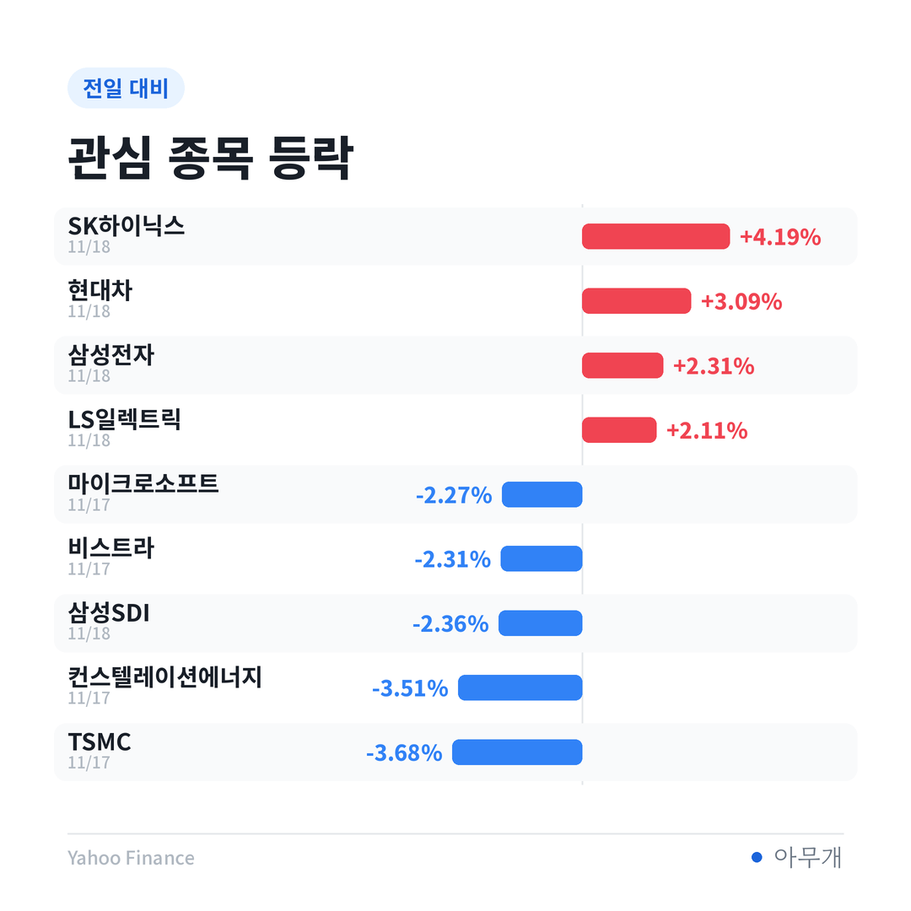

📷 사진 1 자리
거래소 실적표의 첫 줄과 아래 줄
한국거래소와 상장회사협의회가 18일 12월 결산 코스피 상장사 635곳의 3분기 실적을 냈어요[1][2]. 첫 줄은 화려해요. 1~9월 누적 매출 3,018조8,965억원(+31.29%), 영업이익 638조2,829억원(+264.39%), 순이익 553조8,332억원(+272.65%)이에요[1][2]. 같은 기간 코스피는 최근 한 달에만 12.15% 빠졌어요.
📷 사진 2 자리
| 구분 | 1~9월 누적 | 3분기(7~9월)만 |
|---|---|---|
| 매출 | 3,018조8,965억원, 1년 전보다 +31.29%[1][2] | 1,070조637억원, 2분기보다 +2.32%[1] |
| 영업이익 | 638조2,829억원, +264.39%[1][2] | 253조7,842억원, +10.55%[1] |
| 순이익 | 553조8,332억원, +272.65%[1][2] | 169조6,093억원, -30.41%[1][2] |
| 삼전닉스 제외 순이익 증가율 | +94.86%[1][2] | 자료 없음 |
아래 줄로 내려가면 그림이 달라져요. 3분기 매출과 영업이익은 2분기보다 늘었는데 순이익만 30.41% 줄었어요[1]. 이 비율로 거꾸로 계산하면 2분기 순이익은 약 243조7천억원이에요[1]. 석 달 새 약 74조원이 줄었어요[1].
쏠림도 커요. 삼성전자와 SK하이닉스 순이익 368조300억원이 전체의 66.45%예요[1]. 두 회사를 빼면 나머지 상장사 순이익은 약 185조8천억원이에요[1]. 그래도 1년 전보다 94.86% 늘었으니 두 회사만의 잔치는 아니었어요[1][2].
증권업은 분기 숫자가 더 거칠어요. 증권사 3분기 순이익은 5,001억원으로 2분기보다 88.15% 줄었어요[1]. 은행은 3분기에 개선세로 돌아섰다고 하니 금융업 안에서도 방향이 갈렸어요[1].
실적표 숫자와 해석, 따로 보기
| 구분 | 내용 | 성격 |
|---|---|---|
| 누적 순이익 +272.65%, 3분기 순이익 -30.41% | 거래소·상장협 집계[1][2] | ✅ 집계 |
| 3분기 순이익 감소의 공통 요인은 원/달러 환율 변동 | 업계 관계자 발언[1] | ⚠️ 해석 |
| 삼전닉스 분기 실적은 내년 2분기가 정점 | 키움증권 전망[6] | 🗣️ 전망 |
| 이번 하락은 업황 하락 전환을 반영 | DB증권 연구원[6] | 🗣️ 해석 |
환율 이야기는 해석이에요. 연합뉴스가 전한 업계 관계자는 업종을 가리지 않고 영향을 준 요인으로 원/달러 환율 변동을 꼽았어요[1]. 원/달러는 올해 1,500원대에서 최근 1,330원대까지 내려왔어요[7]. 그 변동이 회사별로 순이익을 얼마나 깎았는지는 실적표에 따로 나와 있지 않아요.
5천선을 되찾은 날, 판 쪽과 산 쪽
| 지표 | 18일 종가 | 전일 대비 |
|---|---|---|
| 코스피 | 5,067.44 | +1.99% |
| 코스닥 | 662.81[3][5] | +1.96%[3][5] |
| SK하이닉스 | 1,144,000원 | +4.19% |
| 삼성전자 | 194,700원 | +2.31% |
| 현대차 | 267,000원 | +3.09% |
| 원/달러 환율 | 1,333.0원[5] | -5.2원[5] |
출발은 5,098.82, 2.62% 오른 자리였어요[4]. 개장 직후 3.31%까지 올랐다가 상승분을 다 내주고 한때 4,900선까지 밀렸어요[3][4]. 장중 저점은 4,943이에요[8]. 오후에 다시 올라 5,067.44로 마감했어요[3][4].
📷 사진 3 자리
방향을 바꾼 건 외국인이었어요. 장 초반 3,000억원 가까이 사던 외국인이 12시 전후로 매도로 돌아서 하루 3,338억원을 팔았어요[3][5]. 지수를 받친 건 기관 5,118억원과 기타법인 4,600억원 순매수예요[3]. 개인은 6,380억원을 팔았어요[3].
외국인 매도가 반도체에 몰리는 건 처음이 아니에요. 대신증권이 6월 말~11월 초 외국인 순매도가 가장 컸던 10거래일을 보니 반도체 밖 종목 비중은 1.3%뿐이었어요[7]. 같은 기간 반도체 밖 종목의 시가총액 비중은 46%였어요[7].
환율은 원화 쪽으로 기울었어요. 서울 외환시장 오후 3시 30분 기준가는 1,333.0원으로 5.2원 내렸어요[5]. 달러인덱스가 전날 19개월 만의 최고치를 찍은 상황인데도 원화가 버틴 건 수출업체 달러 매도 영향이라는 설명이에요[5].
삼전닉스 주주 계좌로 옮겨 보면
SK하이닉스는 1,144,000원으로 4.19% 올랐어요. 엔비디아 실적이 나오기 전 마지막 종가 1,098,000원 위로 올라선 거예요. 다만 장 초반 5~6%대였던 상승폭은 마감 때 절반 남짓으로 줄었어요[4].
📷 사진 4 자리
증권사 눈높이와 주가의 거리는 아직 멀어요. 16일 기준 평균 목표주가는 삼성전자 468,571원, SK하이닉스 3,062,000원이에요[6]. 오늘 종가로 다시 재면 괴리율은 각각 약 141%, 약 168%예요[6]. 내년 영업이익 전망은 7월 말보다 삼성전자 12%, SK하이닉스 16% 올라갔어요[6].
7월 하락장과 비교한 시각도 있어요. DB증권 연구원은 7월엔 수급 문제였지만 이번엔 업황 하락 전환 가능성을 주가가 반영하고 있다고 봤어요[6]. 실적표에서 3분기 순이익이 꺾인 숫자가 이 걱정에 근거를 하나 보탠 셈이에요[1].
주가가 장기 추세에서 얼마나 멀어졌는지 재 본 곳도 있어요. 유진투자증권은 코스피와 200일 평균선의 거리가 2000년대 이후 네 번째로 크게 벌어졌다고 했어요[4]. 그 평균선은 6,630선이에요[4].
다음 실적표 전까지 세 갈래
| 시나리오 | 무엇을 보면 되나 | 예상되는 영향 |
|---|---|---|
| 3분기가 일시적 | 4분기 실적에서 순이익이 영업이익 흐름을 다시 따라가는지 | 누적 실적과 주가의 거리가 좁혀질 수 있음 |
| 이익 정점 걱정이 굳는다 | 증권사 내년 실적 전망이 내려가기 시작하는지[6] | 목표주가 하향이 이어지고 반등이 짧아질 수 있음 |
| 수급이 먼저 움직인다 | 19일 밤 앤트로픽 상장 뒤 외국인 반도체 매매[4] | 실적과 별개로 지수가 크게 흔들릴 수 있음 |
오늘 실적표에서 가장 무거운 줄은 273%가 아니라 3분기 순이익 -30.41%예요[1]. 누적 숫자는 이미 지나간 1~2분기의 힘이 크고, 주가는 앞으로의 분기를 보고 움직이니까요. 영업이익은 늘었는데 순이익만 줄어든 이유가 회사별로 설명되기 전까지는 '실적은 좋은데 주가가 왜'라는 질문이 쉽게 풀리지 않을 것 같아요.
✍️ 직접 보거나 들은 경험이 있으면 위 문단에 한두 줄 덧붙이세요 (이 안내 줄은 지우기)
반대로 보면 영업이익이 3분기에도 10.55% 늘었다는 점이 더 중요하다는 시각도 가능해요[1]. 본업에서 번 돈은 늘었고 줄어든 건 환율처럼 해마다 방향이 바뀌는 항목일 수 있어서예요[1]. 내년 실적 전망이 오히려 올라가고 있다는 점도 이 시각을 받쳐요[6].
앤트로픽 상장까지 볼 것
참고한 기사
이 글은 정보 제공 목적이며 투자 권유가 아닙니다. 투자 판단과 책임은 본인에게 있습니다.
수치 출처: Yahoo Finance(11월 18일 국내 종가, 미국 11월 17일 종가), 한국거래소·한국상장회사협의회 3분기 결산 실적(연합뉴스·조선일보 보도), 각 기사.



